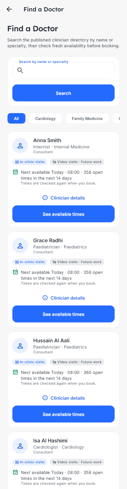

Plain-language report support
Upload a medical PDF and explore explanations and follow-up questions when the report AI service is connected.
Practical tools that help you organize appointments, understand records, and keep care moving.

Browse clinicians, review available times, and follow a clear booking journey.

Keep medical reports, medications, imaging, and visit information organized around the patient.
Upload a medical PDF and explore explanations and follow-up questions when the report AI service is connected.
Keep patient–clinician messages together and give staff a dedicated place for team communication.
Supported document workflows include preparation, issuance, downloads, and verification.
Language options and right-to-left layouts help make the application easier to use.
Patient, staff, and admin experiences organize tools around the work each person needs to do.
Responsive navigation, light and dark themes, and text-size options support different preferences.
Take a look inside myhealth and explore it for yourself.